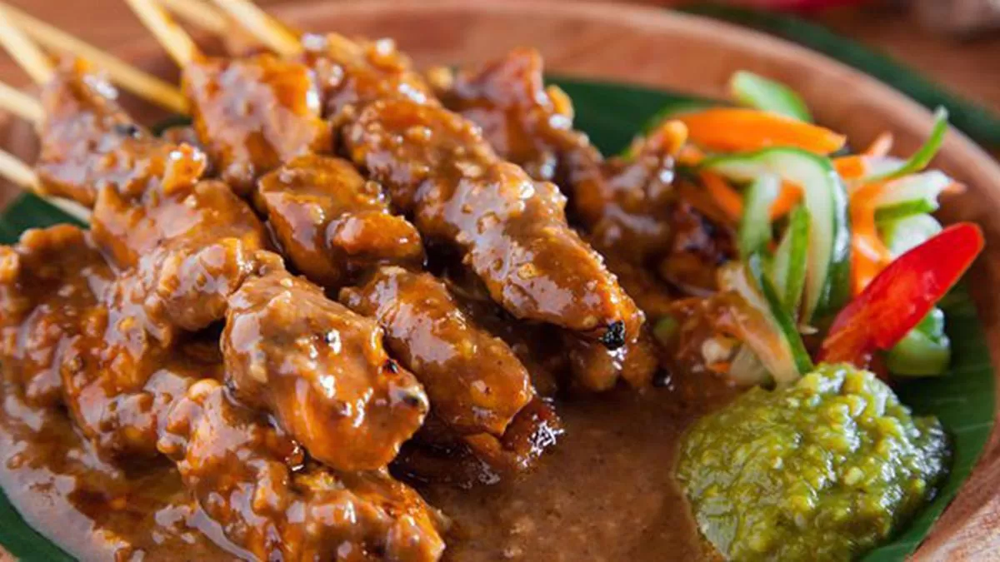

Sate Madura (Satè Mâdhurâ) adalah sate dengan bumbu khas dari Madura. Sate ini biasanya terbuat dari ayam. Selain terkenal sebagai pulau garam, Madura juga terkenal dengan satenya yang sudah dikenal di seluruh Nusantara.

Bahan-bahan:
Bahan Sate:
5 sendok makan kecap manis
1 sendok makan minyak goreng
22 buah tusuk sate
4 buah paha ayam fillet, diambil dagingnya dan disisihkan kulitnya
Bahan Sambal Kacang:
200 gram kacang tanah kulit, disangrai dan dihaluskan
3 buah cabai merah keriting, digoreng
4 butir kemiri, digoreng
2 buah cabai merah besar, digoreng
3 sendok makan gula merah, disisir
1 sendok teh garam
500 ml air panas
Bahan Pelengkap:
4 buah lontong
2 sendok makan kecap manis
3 buah jeruk limau
1 sendok teh garam
2 sendok makan bawang merah goreng untuk taburan
Bahan Sambal (dihaluskan):
15 buah cabai rawit merah, direbus
4 buah cabai merah keriting, direbus
1/4 sendok teh garam
Cara membuat Sate Ayam Madura:
Bikin sambal kacang dahulu. Haluskan kacang tanah, cabai merah keriting, kemiri, cabai merah besar, gula merah, dan garam. Tuang air, masak sampai matang dan kental.
Ambil 150 gram sambal kacang, kecap manis, dan minyak goreng. Aduk rata. Celup ayam ke dalamnya dan lumuri sampai rata.
Tusukkan ayam pada tusuk sate. Bakar sampai setengah matang. Lumuri lagi dengan campuran kacang. Bakar lagi sampai matang.
Blender cabai untuk sambal, tambahkan garam, dan aduk rata.
Sajikan sate bersama sambal kacang, pelengkap, dan sambalnya.